Explore
Explore India's Skills
Fifteen traditions from across India. Filter by type or region, then open one to learn its story.
All traditions
-
 Arts & PaintingEast
Arts & PaintingEastMadhubani painting
Bright paintings full of fish, birds, flowers and gods, filled edge to edge with fine lines.
-
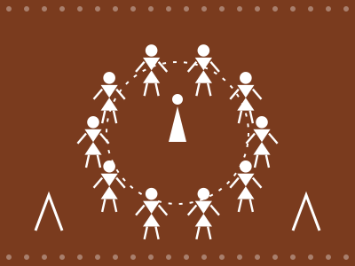
Arts & PaintingWestWarli painting
Simple white figures made of circles, triangles and lines that show village life, dancing and farming.
-
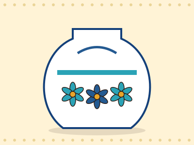
Pottery & CraftsNorthJaipur blue pottery
Shiny pots and tiles painted in cobalt blue and turquoise, with flowers and birds.
-
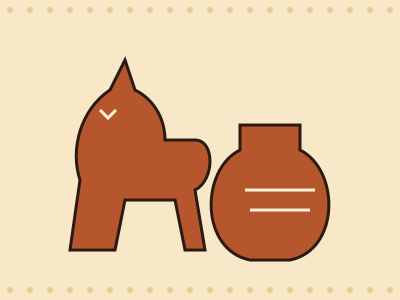
Pottery & CraftsEastTerracotta pottery
Red-brown clay shaped by hand or on a wheel, then baked to make pots, lamps and animal figures.
-
Pottery & CraftsCentral
Dhokra metal casting
Small metal figures of animals and people, made using wax and clay in a very old method.
-
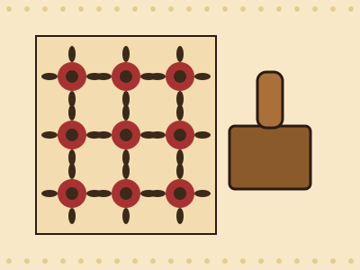
Textiles & WeavingNorthBagru block printing
Patterns printed on cloth by hand using carved wooden blocks and natural dyes.
-
 Textiles & WeavingSouth
Textiles & WeavingSouthKalamkari
Cloth painted or block-printed with plant dyes, showing trees, flowers and stories.
-
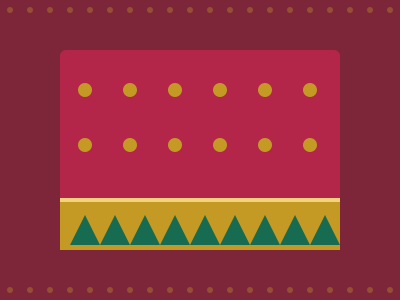
Textiles & WeavingSouthKanjeevaram silk weaving
Heavy silk sarees woven on handlooms, with wide borders and gold thread.
-
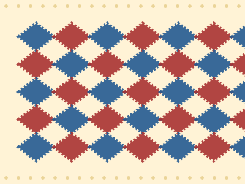
Textiles & WeavingEastIkat weaving
Threads are tie-dyed before weaving, so the pattern appears as the cloth is made.
-
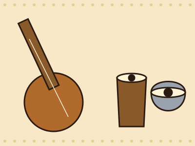
Traditional MusicNorthSitar & tabla
The sitar's ringing strings and the tabla's talking drums are at the heart of Hindustani music.
-
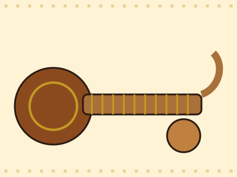
Traditional MusicSouthCarnatic veena
A large stringed instrument with a deep, warm sound, played in Carnatic music.
-
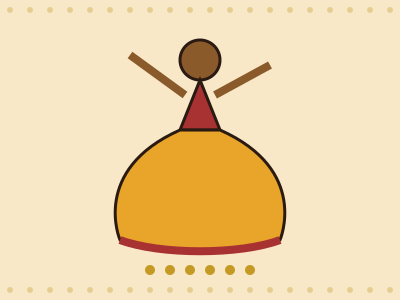
DanceNorthKathak
A storytelling dance with fast spins, rhythmic footwork and ankle bells.
-
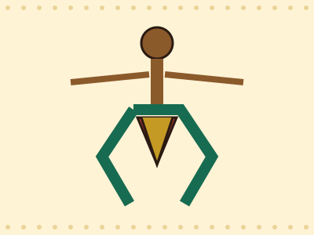
DanceSouthBharatanatyam
A classical dance from Tamil Nadu with strong poses, clear footwork and expressive hands.
-
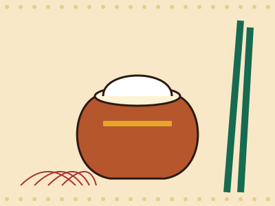
Traditional FoodSouthPongal (harvest dish)
A dish of rice and lentils cooked during the Pongal harvest festival, sweet or savoury.
-
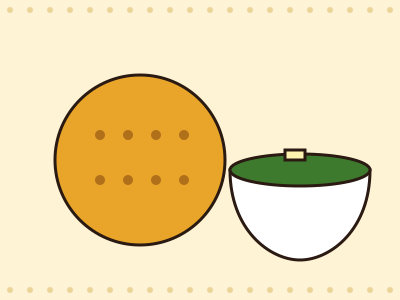
Traditional FoodNorthMakki di roti & sarson da saag
Corn flatbread with slow-cooked mustard greens, a winter favourite in Punjab.